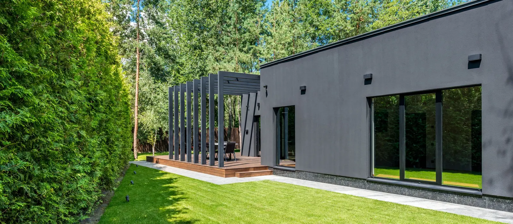

Taille de haies
Entretien annuel et remise en forme des haies de séparation, très présentes entre les pavillons haillanais.
Petite commune devenue résidentielle, Le Haillan s'est étendu par lotissements successifs. Les parcelles y sont régulières et proches les unes des autres, presque toujours séparées par une haie mitoyenne. Le bois du Haillan reste le grand repère végétal du territoire. Nous intervenons sur toute la commune au départ de notre siège de Mérignac.

Photo d'illustrationLes neuf prestations de l'entreprise sont disponibles sur la commune, y compris en limite de propriété.
Entretien annuel et remise en forme des haies de séparation, très présentes entre les pavillons haillanais.
Réduction mesurée de la couronne pour rendre de la lumière à la parcelle voisine sans déséquilibrer l'arbre.
Démontage, c'est-à-dire descente de l'arbre en sections, quand la clôture voisine ne laisse aucune aire de chute.
Rognage de la souche, un fraisage qui la réduit en copeaux sous le niveau du sol.
Reprise des branches et du bois en fin de chantier, sans dépôt laissé devant chez vous.
Mise en sécurité d'une branche cassée qui menace une toiture ou le jardin d'à côté.
Voir aussi l'abattage d'arbre, le débroussaillage et les soins et le diagnostic.
Le Haillan
Le Haillan
[[À CONFIRMER : détail réel de ces deux chantiers, quartier, essence, linéaire et durée]]
Une bonne part du travail sur la commune concerne un arbre ou une haie posés sur une limite de propriété. Le découpage en lotissements a multiplié les séparations végétales entre voisins. La question juridique arrive donc souvent avant la question technique.
Sur le plan légal, une haie plantée sur la ligne séparative appartient aux deux propriétaires. Son entretien est partagé, ainsi que les frais qui vont avec. Personne ne peut décider seul de l'arracher ou de la rabattre fortement.
Les branches qui débordent au-dessus du terrain d'à côté posent un autre problème. Votre voisin a le droit de vous demander de les couper. Il n'a pas celui de les couper lui-même. Le propriétaire de l'arbre conserve de son côté le droit aux fruits.
En pratique, la discussion avec le voisin précède presque toujours la prise de rendez-vous. Un accord clair sur ce qui sera coupé évite les reprises. Nous établissons le devis une fois ce point réglé. La taille de haie se déroule ensuite sans débat sur le chantier.
Le bois du Haillan borde plusieurs quartiers résidentiels. Les jardins voisins reçoivent l'ombre de sujets hauts, et les demandes portent souvent sur une remise en lumière.
La commune se trouve enfin sous l'axe d'approche de l'aéroport de Bordeaux-Mérignac. La hauteur des arbres peut donc être limitée dans certains secteurs.
[[À CONFIRMER : secteurs du Haillan concernés par les servitudes aéronautiques et arbres protégés au plan local d'urbanisme de Bordeaux Métropole]]
Prévenez le voisin concerné et mettez-vous d'accord sur la hauteur retenue. Une haie posée sur la limite engage les deux propriétaires. Le service urbanisme de la mairie renseigne sur les règles de plantation en vigueur.
[[À CONFIRMER : coordonnées du service urbanisme du Haillan]]
Une haie plantée sur la limite séparative appartient aux deux voisins. Son entretien et les frais qui vont avec sont partagés entre eux. Nous établissons un devis unique, à charge pour vous de convenir de la répartition.
Il peut vous demander de couper les branches qui avancent au-dessus de son terrain. Il n'a pas le droit de les couper lui-même. Le propriétaire de l'arbre conserve par ailleurs le droit aux fruits que porte cet arbre.
Un arbre situé sur la ligne séparative relève des deux propriétaires. Aucun des deux ne peut le faire abattre sans l'accord de l'autre. La visite sur place permet de repérer la limite et de préciser le travail réalisable.
[[À CONFIRMER : règles de mitoyenneté rappelées par la mairie du Haillan]]
Le Haillan touche Mérignac au sud et Eysines à l'est. Nous travaillons sur les deux communes.
La page des zones d'intervention réunit l'ensemble des communes couvertes au départ de Mérignac.
Pour une urgence, appelez directement. Le téléphone reste le moyen le plus rapide.